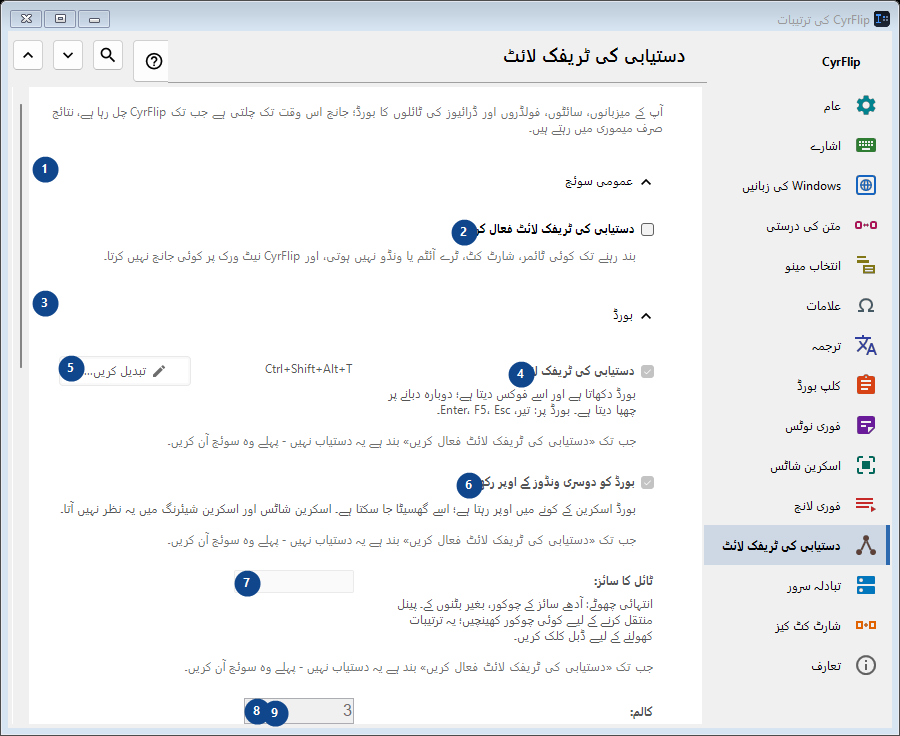
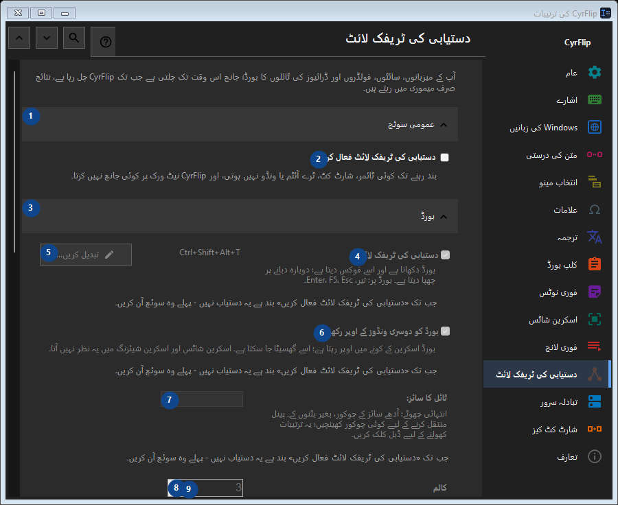

دستیابی کی ٹریفک لائٹ
مقصد
آپ کے میزبانوں، سائٹوں، فولڈروں اور ڈرائیوز کی ٹائلوں کا بورڈ؛ جانچ اس وقت تک چلتی ہے جب تک CyrFlip چل رہا ہے، نتائج صرف میموری میں رہتے ہیں۔


استعمال کی ترتیب
ترتیبات فوراً لاگو ہوتی ہیں۔ کوئی لازمی ترتیب نہیں؛ نیچے کے گروپ استعمال کریں۔
عناصر
1. عمومی سوئچ
درج شدہ کارروائی کے لیے یہ حکم استعمال کریں۔ قبول کرنے سے پہلے تصدیق پڑھیں۔
آپ کے شارٹ کٹ2. دستیابی کی ٹریفک لائٹ فعال کریں
بند رہنے تک کوئی ٹائمر، شارٹ کٹ، ٹرے آئٹم یا ونڈو نہیں ہوتی، اور CyrFlip نیٹ ورک پر کوئی جانچ نہیں کرتا۔
آپ کے شارٹ کٹ3. بورڈ
درج شدہ کارروائی کے لیے یہ حکم استعمال کریں۔ قبول کرنے سے پہلے تصدیق پڑھیں۔
آپ کے شارٹ کٹ4. دستیابی کی ٹریفک لائٹ
جب تک «دستیابی کی ٹریفک لائٹ فعال کریں» بند ہے یہ دستیاب نہیں - پہلے وہ سوئچ آن کریں۔ یہ عنصر ابھی دستیاب نہیں۔ پہلے خصوصیت فعال کریں یا اندراج منتخب کریں۔
آپ کے شارٹ کٹ5. تبدیل کریں - دستیابی کی ٹریفک لائٹ
جب تک «دستیابی کی ٹریفک لائٹ فعال کریں» بند ہے یہ دستیاب نہیں - پہلے وہ سوئچ آن کریں۔ یہ عنصر ابھی دستیاب نہیں۔ پہلے خصوصیت فعال کریں یا اندراج منتخب کریں۔
آپ کے شارٹ کٹ6. بورڈ کو دوسری ونڈوز کے اوپر رکھیں
جب تک «دستیابی کی ٹریفک لائٹ فعال کریں» بند ہے یہ دستیاب نہیں - پہلے وہ سوئچ آن کریں۔ یہ عنصر ابھی دستیاب نہیں۔ پہلے خصوصیت فعال کریں یا اندراج منتخب کریں۔
آپ کے شارٹ کٹ7. ٹائل کا سائز
جب تک «دستیابی کی ٹریفک لائٹ فعال کریں» بند ہے یہ دستیاب نہیں - پہلے وہ سوئچ آن کریں۔ یہ عنصر ابھی دستیاب نہیں۔ پہلے خصوصیت فعال کریں یا اندراج منتخب کریں۔
آپ کے شارٹ کٹ8. کالم
جب تک «دستیابی کی ٹریفک لائٹ فعال کریں» بند ہے یہ دستیاب نہیں - پہلے وہ سوئچ آن کریں۔ یہ عنصر ابھی دستیاب نہیں۔ پہلے خصوصیت فعال کریں یا اندراج منتخب کریں۔
آپ کے شارٹ کٹ9. جب تک «دستیابی کی ٹریفک لائٹ فعال کریں» بند ہے یہ دستیاب نہیں - پہلے وہ سوئچ آن کریں۔
ساتھ کے لیبل کے مطابق قدر منتخب یا درج کریں۔ آگے بڑھنے سے پہلے جانچیں۔ یہ عنصر ابھی دستیاب نہیں۔ پہلے خصوصیت فعال کریں یا اندراج منتخب کریں۔
آپ کے شارٹ کٹ10. بورڈ ونڈو کی شفافیت
جب تک «دستیابی کی ٹریفک لائٹ فعال کریں» بند ہے یہ دستیاب نہیں - پہلے وہ سوئچ آن کریں۔ یہ عنصر ابھی دستیاب نہیں۔ پہلے خصوصیت فعال کریں یا اندراج منتخب کریں۔
آپ کے شارٹ کٹ11. بورڈ دکھائیں
جب تک «دستیابی کی ٹریفک لائٹ فعال کریں» بند ہے یہ دستیاب نہیں - پہلے وہ سوئچ آن کریں۔ یہ عنصر ابھی دستیاب نہیں۔ پہلے خصوصیت فعال کریں یا اندراج منتخب کریں۔
آپ کے شارٹ کٹ12. اہداف
درج شدہ کارروائی کے لیے یہ حکم استعمال کریں۔ قبول کرنے سے پہلے تصدیق پڑھیں۔
آپ کے شارٹ کٹ13. پتہ
جب تک «دستیابی کی ٹریفک لائٹ فعال کریں» بند ہے یہ دستیاب نہیں - پہلے وہ سوئچ آن کریں۔ یہ عنصر ابھی دستیاب نہیں۔ پہلے خصوصیت فعال کریں یا اندراج منتخب کریں۔
آپ کے شارٹ کٹ14. شامل کریں
جب تک «دستیابی کی ٹریفک لائٹ فعال کریں» بند ہے یہ دستیاب نہیں - پہلے وہ سوئچ آن کریں۔ یہ عنصر ابھی دستیاب نہیں۔ پہلے خصوصیت فعال کریں یا اندراج منتخب کریں۔
آپ کے شارٹ کٹ15. تفصیلات...
جب تک «دستیابی کی ٹریفک لائٹ فعال کریں» بند ہے یہ دستیاب نہیں - پہلے وہ سوئچ آن کریں۔ یہ عنصر ابھی دستیاب نہیں۔ پہلے خصوصیت فعال کریں یا اندراج منتخب کریں۔
آپ کے شارٹ کٹ16. ابھی سب کچھ جانچیں
جب تک «دستیابی کی ٹریفک لائٹ فعال کریں» بند ہے یہ دستیاب نہیں - پہلے وہ سوئچ آن کریں۔ یہ عنصر ابھی دستیاب نہیں۔ پہلے خصوصیت فعال کریں یا اندراج منتخب کریں۔
آپ کے شارٹ کٹ17. تبدیلیوں کی تاریخ
درج شدہ کارروائی کے لیے یہ حکم استعمال کریں۔ قبول کرنے سے پہلے تصدیق پڑھیں۔
آپ کے شارٹ کٹ18. تاریخ کی فائل کھولیں
جب تک «دستیابی کی ٹریفک لائٹ فعال کریں» بند ہے یہ دستیاب نہیں - پہلے وہ سوئچ آن کریں۔ یہ عنصر ابھی دستیاب نہیں۔ پہلے خصوصیت فعال کریں یا اندراج منتخب کریں۔
آپ کے شارٹ کٹ19. فولڈر میں دکھائیں
جب تک «دستیابی کی ٹریفک لائٹ فعال کریں» بند ہے یہ دستیاب نہیں - پہلے وہ سوئچ آن کریں۔ یہ عنصر ابھی دستیاب نہیں۔ پہلے خصوصیت فعال کریں یا اندراج منتخب کریں۔
آپ کے شارٹ کٹ20. تاریخ صاف کریں...
جب تک «دستیابی کی ٹریفک لائٹ فعال کریں» بند ہے یہ دستیاب نہیں - پہلے وہ سوئچ آن کریں۔ یہ عنصر ابھی دستیاب نہیں۔ پہلے خصوصیت فعال کریں یا اندراج منتخب کریں۔
آپ کے شارٹ کٹ